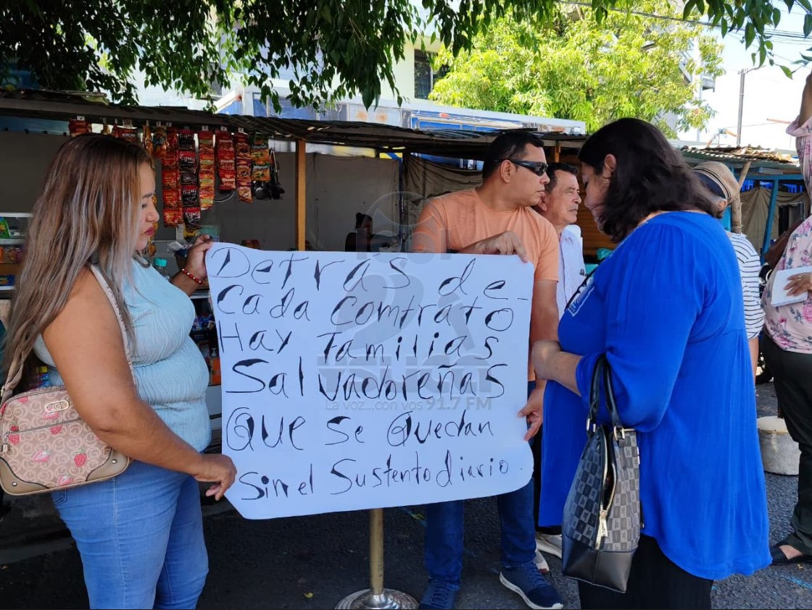

El presidente Nayib Bukele repite que su Gobierno apoya a los microempresarios. Los confeccionistas del paquete escolar —con contratos firmados y sellados con el Estado desde hace un año— lo emplazaron este viernes 21 de agosto a demostrarlo: «El Presidente de la República dice que apoya a los microempresarios; tiene que demostrarlo acá, en este caso», declaró a Radio YSUCA uno de los proveedores, plantado frente a un Ministerio de Educación que esa misma mañana les suspendió una reunión más, «porque no están los titulares» — y ya no queda ninguna otra reunión programada.
Llegaron con pancartas: «Queremos trabajar, no ser excluidos», «Contratos justos y transparentes para todos» y «Detrás de cada contrato hay familias salvadoreñas que se quedan sin el sustento diario». La exigencia es la de siempre: que se les asigne el trabajo «que se viene haciendo año con año». «Hemos tenido diálogo con el Ministerio de Educación, con reuniones y reuniones, y nada concreto», resumió el confeccionista.
Contratos firmados, un año sin ejecutarse
La situación es inusual porque los contratos ya existen. «Tenemos contratos firmados, pero no tienen fechas concretas para cuándo vamos a comenzar el trabajo de uniformes», explicó el proveedor. Los contratos del ciclo 2026 se suscribieron entre agosto y septiembre de 2025, con financiamiento del Gobierno de El Salvador; el plazo de ejecución solo corre cuando el centro educativo entrega la tela, y esa tela, en la mayoría de los casos, nunca llegó.
El dato que agrava el reclamo es el calendario. El paquete escolar está contemplado cada año en el presupuesto general de la nación, y el ciclo tiene un ritmo conocido: los contratos de cada año se firman entre agosto y septiembre del año anterior. Es decir, en un año normal, a estas alturas ya se estarían firmando los contratos de 2027 — mientras que los de 2026, un año después de firmados, siguen sin orden de inicio. La ministra de Educación, Karla Trigueros, anunció desde mayo la planificación del paquete escolar 2027 sin mencionar los contratos vigentes sin ejecutar. (Leé aquí nuestra investigación: «El salto al 2027»)
El trabajo, mientras tanto, se va afuera
Mientras los talleres salvadoreños esperan una fecha que no llega, el trabajo del paquete escolar sí aparece — pero en otra parte. En noviembre de 2025, el Ministerio de Educación adjudicó por contratación directa, con calificativo de urgencia, $16,682,760 a la empresa brasileña Calçados Beira Río por 113,000 pares de zapatos escolares (proceso 3100-2025-P0309, registrado en Comprasal). Y en enero de este año aterrizó en Comalapa el vuelo K4917 de Kalitta Air con 345,000 uniformes terminados: sin número de proceso público, sin monto declarado y sin país de origen confirmado. El trabajo de los confeccionistas locales se está yendo a Brasil — o a saber dónde.
En la misma línea, más de 500 pequeños proveedores de útiles escolares que tenían notificación formal de adjudicación desde agosto de 2025 quedaron fuera de la licitación resuelta en noviembre, que terminó en manos de cinco empresas grandes. Se enteraron por terceros.
«No sé si el Presidente sabe de esto»
«No sé si el Presidente sabe de esto, o no sabe lo que están manejando aquí los señores del MINED central», dijo el proveedor entrevistado por la radio. Los confeccionistas, que se describen como pequeños empresarios de escasos recursos, anunciaron que realizarán una concentración pacífica frente al ministerio y pidieron que sea la propia ministra quien los reciba: «Que no nos mande personas ajenas, que sea ella la que nos atienda, porque sí es preocupante lo que estamos pasando».

Sin respuesta oficial
La suspensión de este viernes se suma a la del 23 de julio, cancelada a las 8:15 de la mañana sin explicación, y a una serie de reuniones pospuestas y cartas sin respuesta desde octubre de 2025. (Leé la cobertura anterior aquí)
Hasta el cierre de esta nota, el Ministerio de Educación no había comunicado una nueva fecha de reunión ni un cronograma para la entrega de la tela y la orden de inicio de los contratos del ciclo 2026, requisitos sin los cuales los confeccionistas no pueden comenzar a trabajar. Con la suspensión de este viernes, los proveedores se quedaron sin ninguna reunión en agenda.
#PlumaLibre #PaqueteEscolar2026